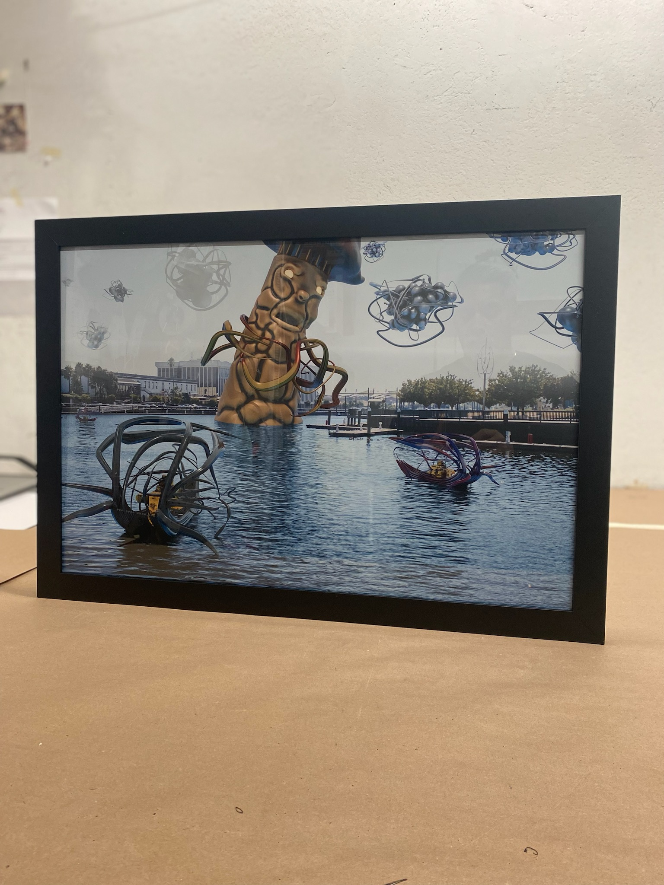
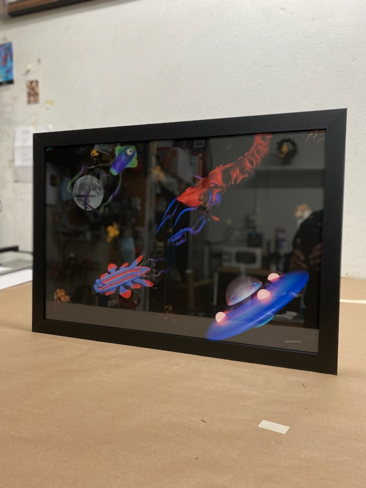
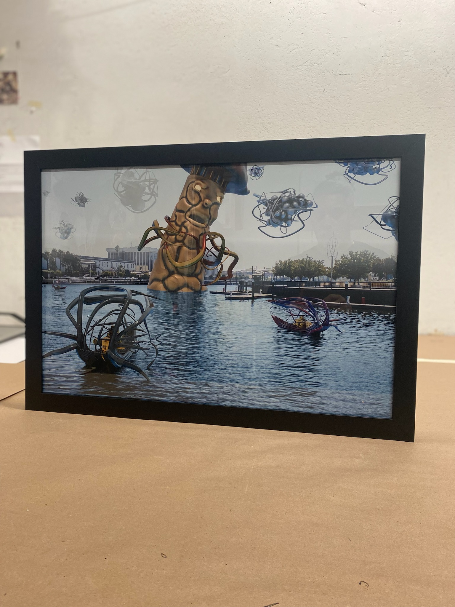
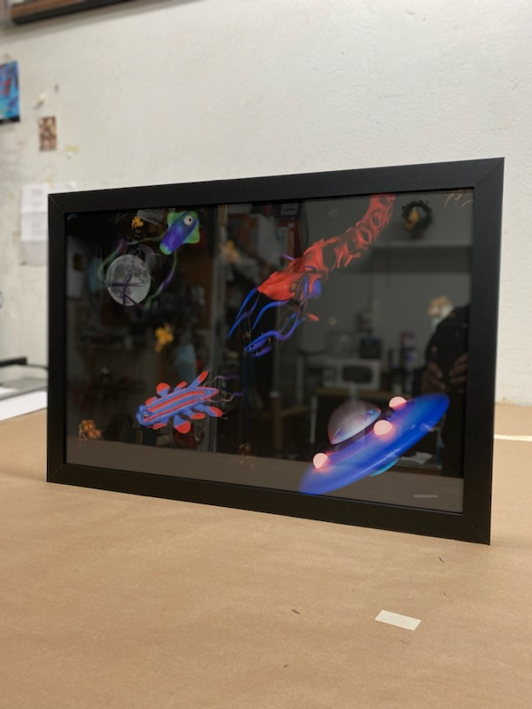
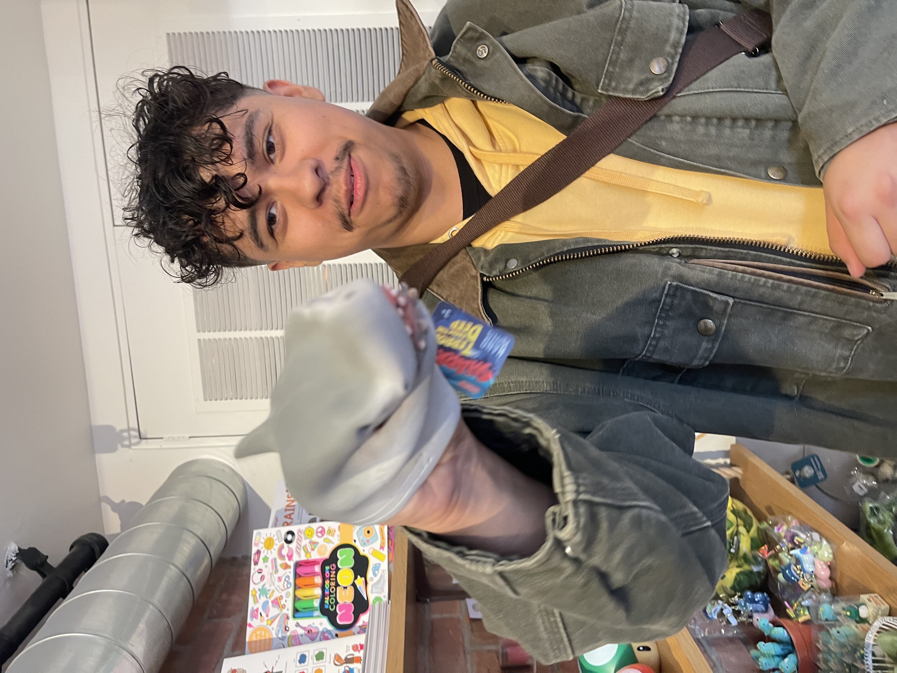

Even If
Artist Statement
Join me in entering a playful world within life itself! Life itself can be very dull to the average person. It’s so boring! Even If is a series of 3 prints that turn the real world into a playful fantasy. I have always believed that humans tend to lose their sense of “childlike” curiosity as they grow older. Inspired by the way children add imagination into the world.
Curiosity and creativity is an important aspect to have as humans, it’s one of the things that make us human. Curiosity and creativity allows us to live in our own little world. A world different to others, a world that is uniquely us. Each human has their own perception of what the world can be seen, Even If aims to share that it’s okay to live in your own little world. By using Blender to create monsters, boats, and a playground, I transported these models into the real world. Each print represents different aspects of childlike curiosity and creativity. Everything made using Blender is made to look “childish,” I then took photos from the boring real world and composed the two together.
The joining of two worlds! Childish creativity, curiosity, and reality! Remember it’s okay to be different, live in your own little world, or have a little bit of a “childish” creativity/curiosity! Even if the world can be dull from time to time, we can make it a little more playful!


 



Luis Rodriguez
| Bio | Luis Rodriguez is a 3D and video artist from Stockton, CA. Growing up he always wondered what makes humans human. In his works he aims to tell the world that it is perfectly fine to be human and to be our own individual selves. Primarily working with Blender and Adobe Creative Suite, he creates art that aims to bring his own world into the real world. His love for exploration and curiosity always leads his creative though process in the art he creates. |
| Contact | View Portfolio |